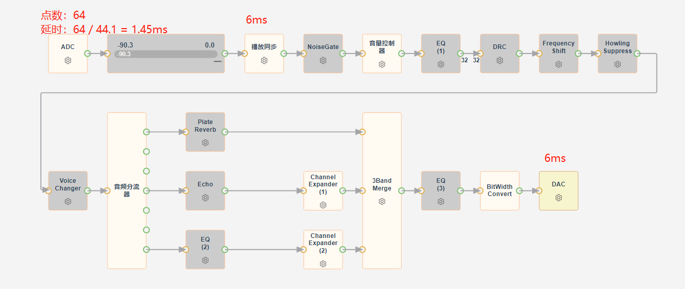
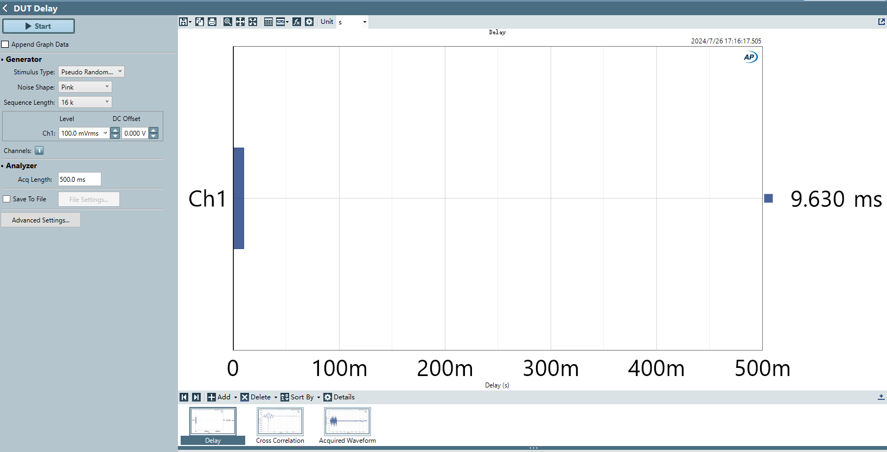

12.16. 延时配置（Delay）
通常来说，延时受数据帧长、数据缓存大小影响。
12.16.1. 蓝牙音乐延时
DAC通道延时配置
12.16.2. 蓝牙通话延时
12.16.2.1. 通话上行延时
ADC中断点数
12.16.2.2. 通话下行延时
DAC通道延时配置
12.16.3. 麦克风音效延时
ADC中断点数配置
减小中断点数可减小数据帧长，但中断频率增加，相应mips消耗会增多。需要评估当前系统运行情况，当cpu较空闲时可用此方式。//audio_config_def.h #define AUDIO_ADC_IRQ_POINTS 64
播放同步延时配置
播放同步节点->同步延时（ms）。可适当减小，调整后需要煲机压测，防止缓存不足导致卡顿。同步节点异常打印小写uuuDAC通道延时配置
DAC->dac通道延时（ms）。可适当减小（需大于等于播放同步延时），调整后需要煲机压测，缓存太少可能出现DAC播空。DAC异常打印大写UUU
12.16.3.1. 范例
测试时需要关闭音效，只关注音频流自身的延时。
下图所示的流程延时
9.63ms，可拆分为1.45msADC中断延时，6ms播放同步缓存延时，1.4msADC/DAC转换延时（44.1k采样率），剩下不足1ms为数据流程序运行延时。  
注：某些音效模块也会缓存数据，引入延时。如：
模块 |
延时 |
|---|---|
Frequency Shift(PS) |
1~11ms |
Frequency Shift(FS) |
1.5ms |
Voice Changer |
20~80ms |
NF Suppressor |
节点配置项 |
LLNS |
节点配置项中 |